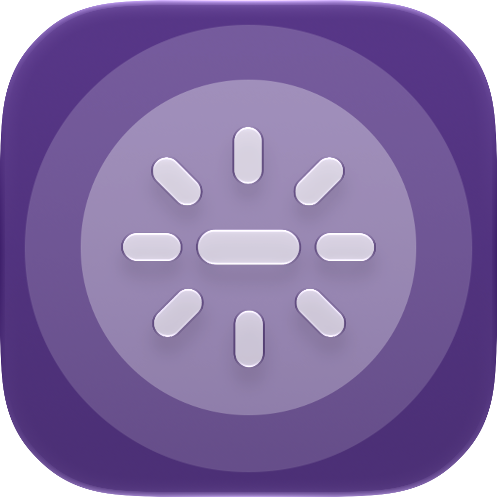

One switch in your menu bar
Turn logo illumination on or off without digging through settings. Luma can also launch when you log in.

Luma GitHubLuma puts the illuminated Apple logo a click away. Turn it on or off from the menu bar on supported MacBook Pro models.
Free download · macOS 27.2 or later
Small app. Simple control.
Turn logo illumination on or off without digging through settings. Luma can also launch when you log in.
Requires macOS 27.2 or later and a supported PROLED XDR MacBook Pro. Other Macs show an unsupported message.
Move Luma to Applications, open it, then enable its background helper when macOS asks for administrator approval.
Ready when you are